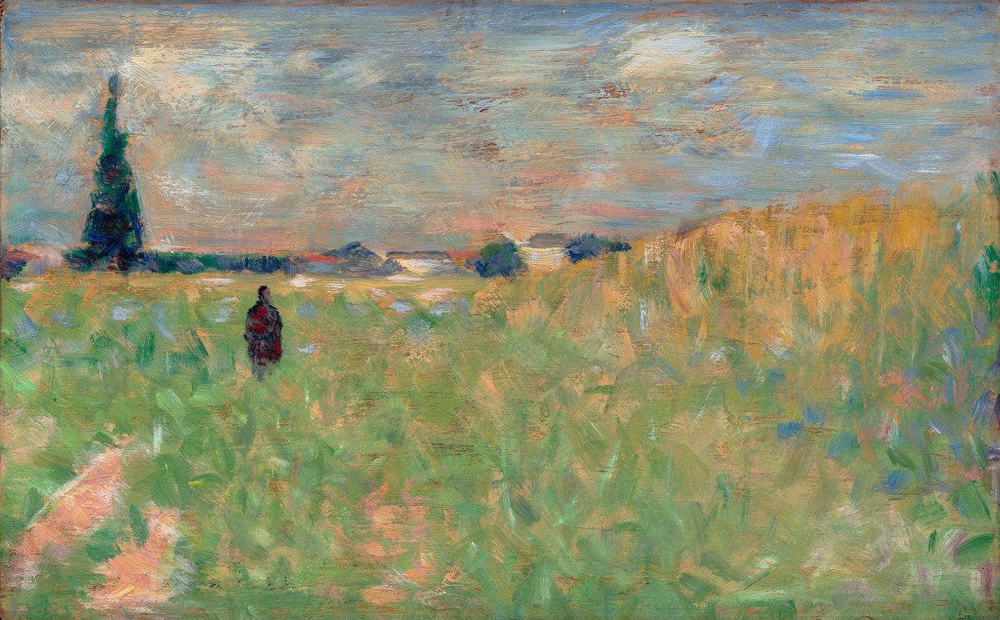

Słowa i obrazy
Życie płynie, omija wielu, ginie w oddali
Tylko Tobie mogłem o tym pisać, bo tęsknię za tym, by móc przed Tobą otworzyć mą duszę, byś mnie mogła przejrzeć na wskroś…
Wciąż jeszcze nic nie nabrało kształtów, wciąż nie ma nic, co by mogło o mnie zaświadczyć — czy w ogóle to kiedyś nastąpi? Czuję, jakby coś zbyt głęboko we mnie wnikało, zapadało, wsączało się całymi latami, aż w końcu brak mi siły, by to wszystko z siebie wydobyć, i wlokę się smutny, z głową ciężką od uczuć i myśli, i nie potrafię nic z siebie wykrzesać…
Życie toczy się dalej i jest jak dzień… Życie płynie, omija wielu, ginie w oddali, okrąża z daleka czekających.
— Rilke w liście do Lou Andreas-Salomé, przeł. W. Markowska
Georges Seurat „A Summer Landscape”, 1883